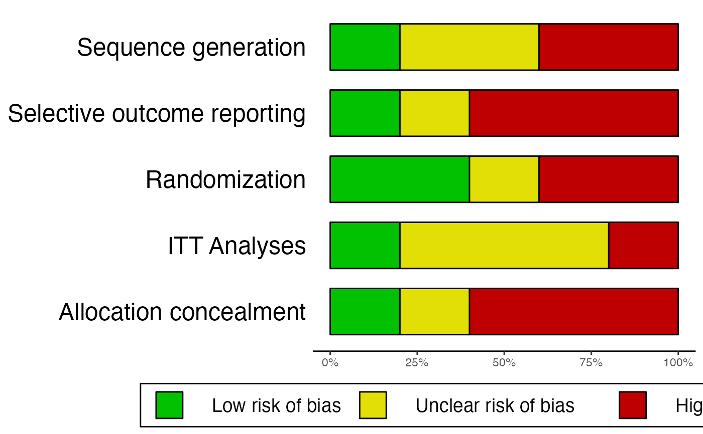
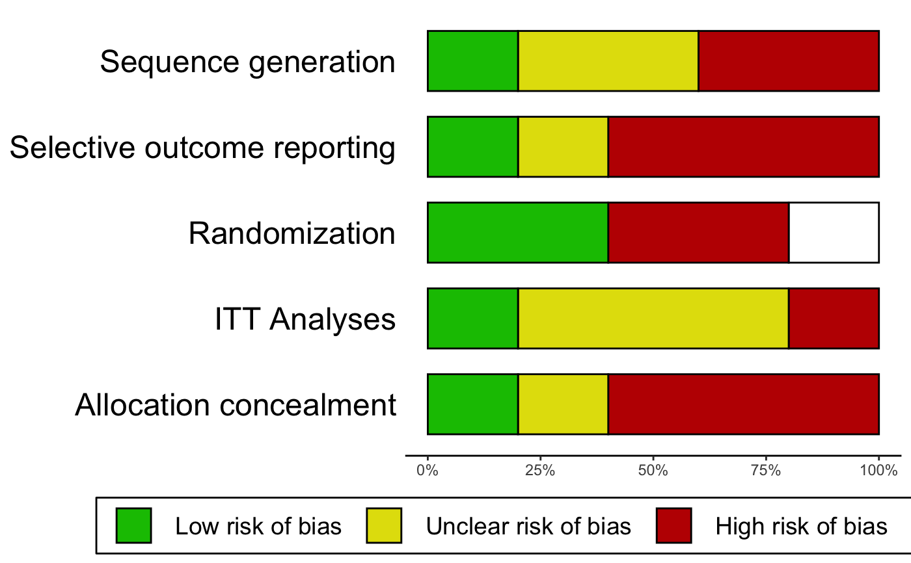

Create a RevMan-style risk of bias summary chart
rob.summary.RdThis function generates summary plots for study quality assessments using the Cochrance Risk of Bias Tool. Summary plots follow the style of RevMan Risk of Bias (RoB) summary charts.
Usage
rob.summary(data, name.high="High", name.unclear="Unclear",
name.low="Low", studies, name.missing, table = FALSE)Arguments
- data
A
data.framecontaining a column for each risk of bias criterion, where rows represent each individual studies. The risk of bias assessment for each criterion in each study must be coded as a character string. Up to four codes can be used, referring to low risk of bias, unclear risk of bias, high risk of bias, or missing information. The string used to specify the categories must be specified inname.high,name.unclear,name.lowand/orname.missing, unless defaults for those parameters are used.- name.high
Character specifying how the "high risk of bias" category was coded in
data(e.g.,name.high = "high"). Default is"High".- name.unclear
Character specifying how the "unclear risk of bias" category was coded in
data(e.g.,name.unclear = "unclear"). Default is"Unclear".- name.low
Character specifying how the "low risk of bias" category was coded in
data(e.g.,name.low = "low"). Default is"Low".- studies
A vector of the same length as the number of rows in
dataspecifying the study labels for the risk of bias ratings. Only has to be specified whentable = TRUE.- name.missing
Character specifying how missing information was coded in
data(e.g.,name.missing="missing"). Default is"Missing". All ratings, including missing information, must be coded as strings, so usingNAindatato signify missing information is not valid.- table
Should an additional RevMan style risk of bias table be produced? If set to
TRUE,studiesmust be specified.FALSEby default.
Details
The function automatically removes separators like "-" or "." from column names/risk of bias criteria. To produce
a "clean" plot, you may therefore separate words in the column names of the data data frame using these
symbols (e.g. "Allocation_Concealment" to return "Allocation Concealment").
References
Harrer, M., Cuijpers, P., Furukawa, T.A, & Ebert, D. D. (2019). Doing Meta-Analysis in R: A Hands-on Guide. DOI: 10.5281/zenodo.2551803. Chapter 10
Examples
# Example 1: No missing information, only produce summary plot
data = data.frame(
"study" = c("Jones et al., 2011", "Smith et al., 2008", "Holm, 1971",
"Zajonc et al., 2005", "Grenell, 2014"),
"Allocation_concealment" = c("Low", "High", "High", "Unclear", "High"),
"Randomization" = c("Low", "High", "Unclear", "Low", "High"),
"Sequence_generation" = c("Low", "High", "Unclear", "Unclear", "High"),
"ITT.Analyses" = c("Low", "High", "Unclear", "Unclear", "Unclear"),
"Selective_outcome_reporting" = c("Low", "High", "High", "High", "Unclear")
)
rob.summary(data)
#> Column 'study' removed from plot because it did not contain the specified RoB ratings (only).
#>

# Example 2: Missing information, produce additional summary table
data2 = data.frame(
"study" = c("Higgins et al., 2011", "Borenstein et al., 2008", "Holm, 1971",
"Zajonc et al., 2005", "Cuijpers, 2014"),
"Allocation_concealment" = c("low", "high", "high", "uc", "high"),
"Randomization" = c("low", "high", "miss", "low", "high"),
"Sequence_generation" = c("low", "high", "uc", "uc", "high"),
"ITT.Analyses" = c("low", "high", "uc", "uc", "uc"),
"Selective_outcome_reporting" = c("low", "high", "high", "high", "uc")
)
rob.summary(data2, name.high = "high", name.unclear = "uc", name.low = "low",
name.missing = "miss", studies = data2$study, table = TRUE)
#> Column 'study' removed from plot because it did not contain the specified RoB ratings (only).
#>
